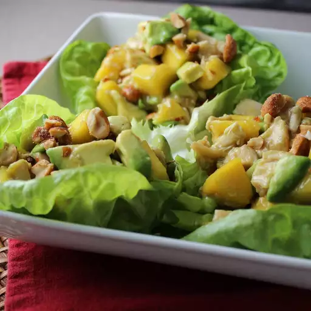

This is a colorful and very tasty mix of chicken, mangos, and avocados in a spicy lime dressing.
Chicken, Avocado and Mango Salad

Prep Time: 30 mins |
Total Time: 30 mins |
Servings: 8 |
|
Yield: 8 Servings |
- 2 tablespoons brown sugar
- ¼ cup water
- ⅓ cup lime juice
- ½ cup chili garlic sauce
- 4 cups shredded, cooked chicken
- 2 medium mangos - peeled, seeded and diced
- 2 avocados - peeled, pitted and diced
- 1 (10 ounce) package spring lettuce mix
Step 1
In a saucepan over medium-high heat, stir together the brown sugar and water.
Bring to a boil, then pour into a medium bowl. Stir in the garlic chili sauce and lime juice.
Set the dressing aside.
Step 2
In a large bowl, toss together the chicken, mangos and avocados.
Arrange the spring salad mix on serving plates, then top with a few spoonfuls of the chicken mixture.
Pour dressing over the top.
Nutrition Facts
per serving
| 296 | 16g | 20g | 19g |
| Calories | Fat | Carbs | Protein |